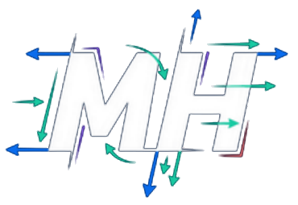

138,25 € brutos por paga separan el salario base de un fisioterapeuta en clínicas privadas de Madrid del SMI anunciado para 2027.

Años distintos. El SMI es de 2027 y la tabla de fisioterapia, de 2026. Falta saber qué pasará con el convenio el próximo año.
Solo salario base. No incluye los complementos que correspondan.
Una de dos tablas. El convenio tiene dos tablas salariales y esta es una de ellas.
SMI anunciado. Queda pendiente comprobar su publicación oficial.
Reponer, limpiar o repartir son trabajos necesarios y exigentes, que merecen salarios dignos. Que el salario mínimo suba es una buena noticia.
En una clínica, ese conocimiento forma parte del valor del servicio que se ofrece.
La tabla marca lo mínimo que debe pagarse, no lo máximo que puede pagarse. Y lo que no se pide, rara vez se ofrece.
Compara lo que factura la clínica con tu agenda y lo que cuesta tu puesto.
sesiones al mes × precio por sesión = valor de tu agendaValoraciones, coordinación, pacientes que continúan, programas que diseñas, formación que traes.
Una cifra, un complemento o unas horas de formación. Y por escrito.
La tabla se negocia entre sindicatos y patronal. Lo que se pide en cada clínica y lo que se pide en esa mesa suman.
Si la fisioterapia aporta valor a las personas, a las clínicas y a la sociedad, ¿por qué cuesta tanto que se refleje en las condiciones de quienes la ejercen?
El salario no es la única medida del valor de una profesión. Pero sí dice algo sobre cómo decidimos reconocerla.
¿Has negociado alguna vez por encima de tabla? Cuéntalo en comentarios y guarda este post para tu próxima conversación salarial.
Convenio colectivo de clínicas privadas de la Comunidad de Madrid (establecimientos sanitarios de hospitalización, asistencia, consultas y laboratorios), anexo IV, tablas 2026 · Orden CIN/2135/2008, BOE, requisitos del título de Grado en Fisioterapia · SMI 2027: cifra anunciada el 17/11/2026, pendiente de publicación oficial.